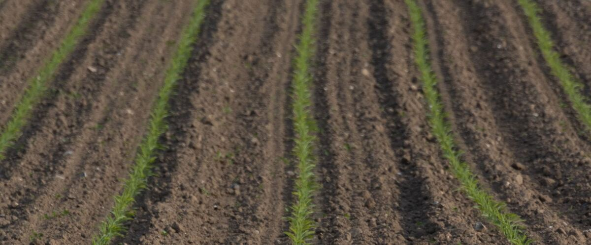
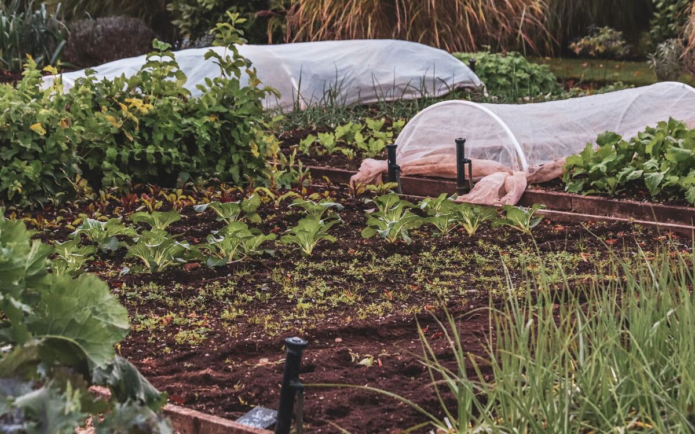

Timing and seasons · Oregon · Washington · Idaho
Gardening in Bend and Central Oregon's Short Season
How to grow vegetables where frost can come almost any month: what to plant, when, and how to protect it.
Gardening in Central Oregon takes a different playbook than the Willamette Valley. At Redmond, the NOAA weather station closest to Bend, the typical last spring frost is June 9 and the first fall frost comes around September 14. That's a frost-free season of about 97 days, and in some years frost shows up in July. Klamath Falls is similar, with about 101 frost-free days.
It's absolutely possible to grow a productive garden here. You just have to pick the right crops and give warm-season ones some help.
Lean on crops that shrug off frost
Cool-season crops are the backbone of a high desert garden. Peas, lettuce, spinach, radishes, kale, chard, carrots, beets, onions and potatoes all handle light frost and can go in weeks before the last frost date. See peas in Bend or potatoes in Bend for exact windows.
Give warm crops a head start and a blanket
- Always use transplants for tomatoes, peppers and squash. There isn't time to start them from seed outdoors.
- Choose the fastest varieties. Look for 60 days or less to maturity: Stupice or Sungold tomatoes, early zucchini, and short-season corn.
- Use wall-o-water rings or cloches for the first few weeks after planting. They store daytime heat and release it on cold nights.
- Keep row cover handy all season. Watch the forecast and cover tender plants on any night forecast below about 40°F.
Water and wind
Central Oregon is dry, with intense sun and big temperature swings between day and night. Drip irrigation on a timer, a thick layer of mulch, and a windbreak (a fence, a hedge, or even shade cloth on the windward side) make a bigger difference here than almost anywhere else in the Northwest.
Raised beds and soil
Raised beds warm up faster in spring, which buys you time. Many Central Oregon soils are sandy, rocky or low in organic matter, so filling beds with a good soil and compost mix pays off quickly.
A season in order
- Late winter: start onions and leeks indoors, then tomatoes and peppers about six to eight weeks before you expect to plant them out.
- As soon as the soil can be worked: peas, spinach, lettuce, radishes and onion starts. A light frost won't hurt them.
- A few weeks later: potatoes, carrots, beets, kale and broccoli starts.
- After the typical last frost (June 9): tomatoes, squash and beans, with covers ready. In many years a cold night still arrives after that date.
- Midsummer: a second sowing of lettuce, radishes and spinach for fall, timed to mature before the first frost around September 14.
- September to October: plant garlic, which overwinters and is one of the most reliable crops in the high desert.

Stretch the season at both ends
A cold frame, a low tunnel of plastic over hoops, or a small hoop house adds weeks in spring and fall, which is a big share of a short season. Even a sheet of row cover laid over plants on a clear, still evening can hold in enough warmth to get them through a light frost. Clear nights are the coldest ones here; cloudy nights are much milder.
If you garden higher up
Gardens in Sisters, La Pine and other higher or low-lying spots often run colder than the airport stations. Low spots where cold air drains at night can frost weeks later in spring than a slope a short walk away. Keep a cheap minimum-maximum thermometer in the garden for a season and you'll learn how your own yard compares.
For every crop's dates, see the Bend and Redmond planting calendar.